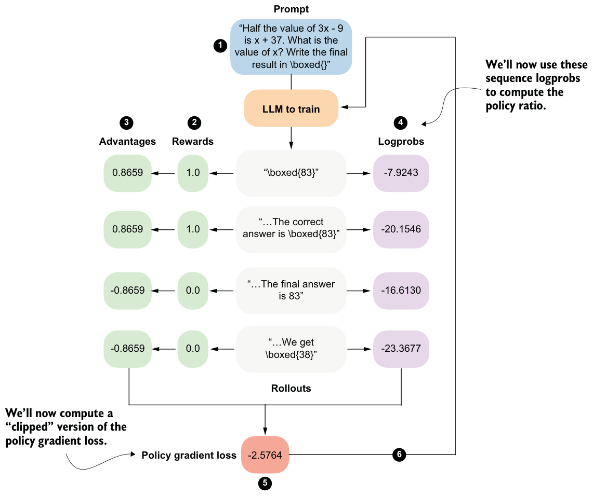
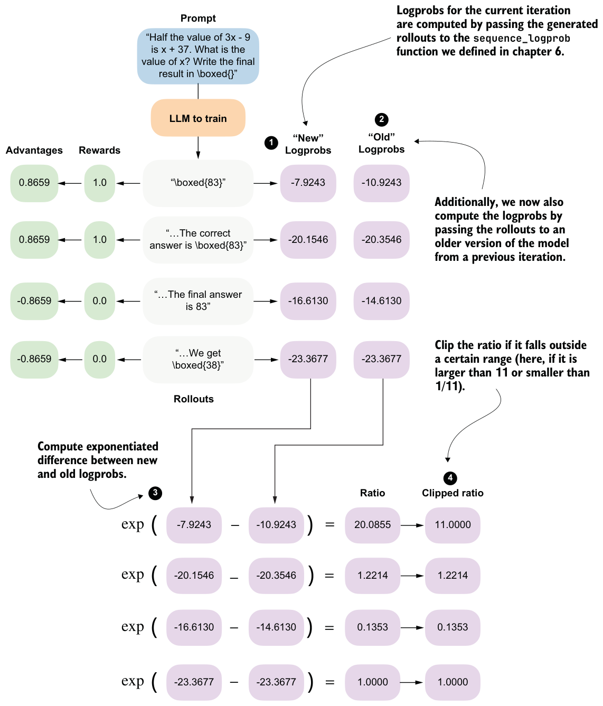

7.4.1Computing clipped policy ratios
The clipped policy ratio measures how much the current policy, that is, the LLM being trained, has changed relative to an earlier version of itself. It compares sequence logprobs computed before an update step with those computed after the update. You can think of it as asking, “If the LLM previously assigned a certain likelihood to this answer, how much more or less likely does it consider the same answer after we adjusted its weights?”
In the GRPO pipeline shown in figure 7.11, this corresponds to comparing the logprobs from step 4, which are computed using the old weight parameters, with the logprobs produced by the updated model (updated in step 6).

This will become clearer once we implement this concept in code. But first, to recap, in chapter 6 we computed the policy gradient loss as follows.
# ...rewards = torch.tensor([1., 1., 0., 0.])
logprobs = torch.tensor([-7.9243, -20.1546, -16.6130, -23.3677])
advantages = (rewards - rewards.mean()) / (rewards.std() + 1e-4)
pg_loss = -(advantages.detach() * logprobs).mean()
print("Policy gradient loss:", pg_loss)The resulting policy gradient value, also shown in figure 7.11, is –2.5764.
Next, we’ll compute the policy ratio and clipped policy ratio, as shown in figure 7.12. The policy ratio and clipped policy ratio are computed by comparing logprobs from a previous version of the policy (“old” logprobs) with those from the current policy (“new” logprobs). The mathematical derivation is outside the scope of this chapter, but if you’re interested, you can find more details in the “Proximal Policy Optimization Algorithms” paper (https://arxiv.org/pdf/1707.06347).
In the following code-based illustration of the calculation shown in figure 7.12, we reuse the logprobs from listing 7.6 as old_logps, assume that a model update has taken place, and then compute the corresponding new_logps using the updated model. In practice, both are computed using the same prompt to ensure a fair, apples-to-apples comparison between the old and current policies.
new_logps = logprobs
old_logps = torch.tensor([
-10.9243, # -7.9243
-20.3546, # -20.1546
-14.6130, # -16.6130
-23.3677, # -23.3677
])
log_ratio = new_logps - old_logps
ratio = torch.exp(log_ratio)
clip_eps = 10.0
clipped_ratio = torch.clamp(ratio, 1.0 - clip_eps, 1.0 + clip_eps)
print("Ratio: ", ratio)
print("Clipped ratio:", clipped_ratio)
The resulting unclipped and clipped policy ratios follow:
Ratio: tensor([20.0855, 1.2214, 0.1353, 1.0000])
Clipped ratio: tensor([11.0000, 1.2214, 0.1353, 1.0000])The ratio tells us how different the old and new logprobs are. If they are identical, the ratio is 1.0.
The clipped_ratio, which we use to compute a clipped version of the policy gradient loss, limits how far the new policy can move away from the old one in a single update. If the new model suddenly assigns a much higher or much lower probability to a rollout than the old model, the raw ratio can become very large or very small. Without clipping, this would scale the advantage term substantially, which could lead to a very large gradient step that might destabilize training.
In practice, when using the clip_eps parameter from listing 7.7, it is common to clamp the ratio to the range 1 ± clip_eps. For example, DeepSeek-R1 used clip_eps = 10, which corresponds to very weak clipping. Other RL training setups, such as RLHF using the PPO algorithm, often use much smaller values, such as 0.1, which results in aggressive clipping and substantially smaller per-step policy changes.
As you can see, with this very generous clip_eps value of 10.0, only the first value is
used in mathematics to denote a small positive quantity.
Next, we’ll apply the ratio and clipped_ratio in the loss computation. Previously, we multiplied the advantages directly by the logprobs. Now, we’ll instead scale the advantages by the policy ratios and use the clipped objective to limit how much each rollout can influence the update.
adv = advantages.detach()
unclipped = ratio * adv
clipped = clipped_ratio * adv
obj = torch.minimum(unclipped, clipped)clipped_pg_loss = -torch.mean(obj)
policy_ratio = torch.mean(ratio)
print("Clipped policy gradient loss:", clipped_pg_loss)
print("Policy ratio:", policy_ratio)The resulting clipped policy gradient loss is –2.3998, which is slightly lower than the regular policy gradient loss we computed previously in this section (–2.5764). This small difference makes sense because, in our example, only one of the policy ratios was effectively clipped by the generous clip_eps = 10.0 ratio. In general, this clipping can prevent overly aggressive updates that could destabilize training. Large, aggressive updates can move the policy too far in a single step, causing large shifts in token probabilities and leading to reward crashes, entropy collapses, or other related problems.
In addition, we compute the average policy ratio, policy_ratio = torch.mean(ratio), which we can track and report during the training run. Here, the result is a relatively large 5.6106. This large policy ratio means that the updated policy (model) assigns a much higher probability to the sampled tokens than the previous policy.